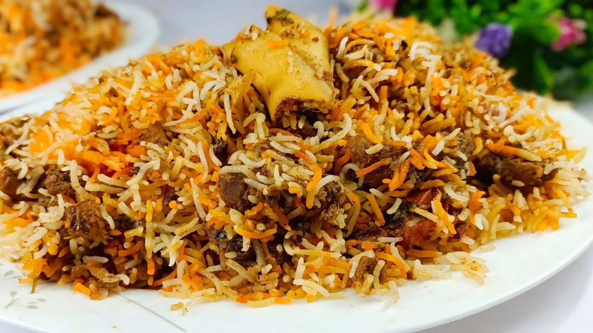

Back to Recipes List
Biriyani Recipe

Beef Biryani is an aromatic, flavorful rice dish where tender, spice-marinated beef is layered with fragrant
basmati rice, caramelized onions, fresh herbs, and a touch of ghee.
It is slow-cooked on low heat (dum) to
allow the rich flavors to meld together
ingredients
For the Beef Marination & Gravy:
- Beef: 1 kg (boneless or bone-in, cut into bite-sized cubes)
- Yogurt (Curd):1/2 cup
- Ginger-Garlic Paste: 2 tablespoons
- Tomatoes: 3 (finely chopped)
- Onions: 3 large (thinly sliced)
- Green Chilies: 3-4 (slit)
- spices
- 1 teaspoon turmeric powder
- 1 tablespoon chili powder
- 2 teaspoons coriander powder
- 1 tablespoon biryani masala powder
- 1 teaspoon garam masala powder
- Whole Spices: 2 bay leaves, 1 cinnamon stick, 4 green cardamoms, and 4 cloves
- Herbs: 1/2 cup fresh mint and 1/2 cup coriander leaves (chopped)
- cooking oil: 1/2 cup
- Salt: To taste
For the Rice & Layering:
- Basmati Rice: 3 cups (soaked for 30 minutes and drained)
- Water: 3 to 4 liters (for boiling the rice)
- Whole Spices: 1 tsp cumin seeds, 1 cinnamon stick, 3 green cardamoms, and 3 cloves
- Ghee: 2-3 tablespoons (for layering)
- Lemon Juice: 2 tablespoons
- Garnish: 1/2 cup fried onions,1/4 cup cashews, and 1/4cup raisins (fried in ghee)
- Food Color: A pinch of saffron soaked in 2 tbsp warm milk or water (optional
procedure
- Marinate and Cook the Beef
- In a large bowl, mix the beef cubes with yogurt, ginger-garlic paste, turmeric, chili powder,
coriander powder, biryani masala, and salt. Set aside for 30-45 minutes.
- Heat oil in a large, heavy-bottomed pot or pressure cooker. Add thinly sliced onions and fry until deep
golden brown. Remove half of the fried onions for layering and garnish
- Add the whole spices (bay leaves, cinnamon, cardamom, cloves) to the remaining onions in the pot and
sauté for a minute
- Add the marinated beef and cook on medium heat for 5-7 minutes until the meat is browned
- Add chopped tomatoes, green chilies, mint, and coriander. Mix well.
- If using a pressure cooker, add 1/2 cup of water,cover, and cook until the beef is tender (about 15-20
minutes). If using a regular pot,
cover tightly and simmer on low for 45-60 minutes until the meat
is fork-tender and the oil separates
- Boil the Rice
- In a large pot, bring a large amount of water to a boil. Add the whole spices
(cumin, cinnamon,
cardamom, cloves) and a generous amount of salt
- Add the soaked and drained basmati rice. Cook until it is about 70-80% done (the rice should have a
slight bite to it).
- Drain the water completely and set the parboiled rice aside
- Layering (Dum)
- In a heavy, wide-bottomed pot, spread a little ghee at the bottom.
- Add a layer of the cooked beef masala with its gravy. Top with a layer of the boiled rice.
- Sprinkle some of the reserved fried onions, chopped mint and coriander, a dash of garam masala, and a
drizzle of lemon juice over the rice
- Repeat the layers until all the beef and rice are used, finishing with a top layer of rice
- Pour the saffron milk/water on top of the rice for color, and drizzle with the melted ghee.
- Dum Cooking
- Seal the pot tightly with an airtight lid (you can use aluminum foil under the lid or seal the edges
with a simple flour dough)
- Place the pot on a flat tawa (griddle) over low heat and let it steam (dum) for 20-25 minutes so the
flavors blend.
- Turn off the heat and let it rest for 10 minutes before opening
- Gently fluff the rice and meat together using a wide spoon, and serve hot